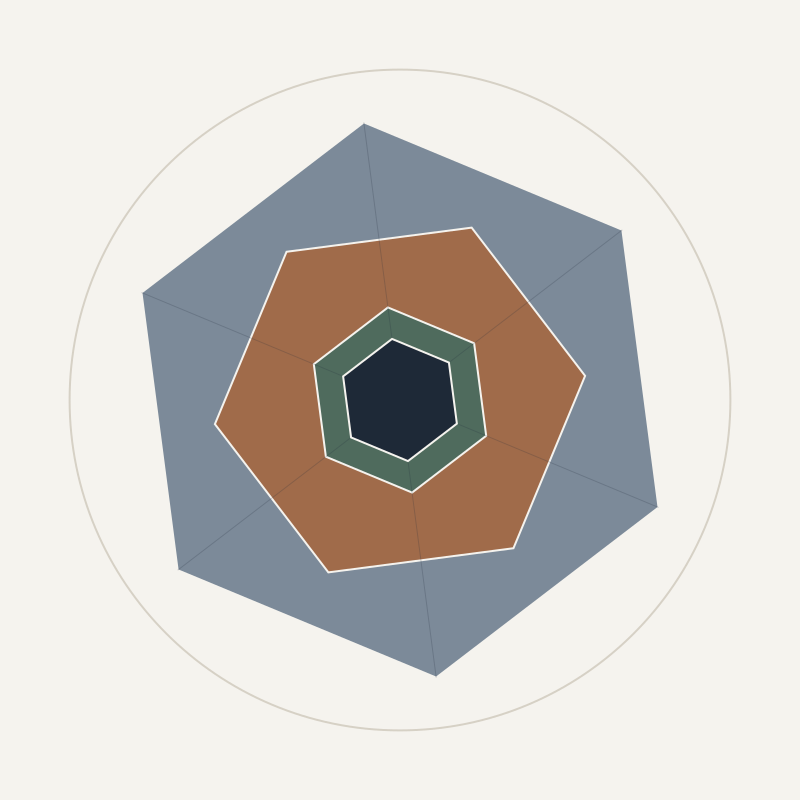

Aplicação web Flask para genealogistas genéticos. Cruza uma árvore GEDCOM com um relatório de DNA em CSV e responde como duas pessoas se conectam, separando três eixos que não se contaminam: o parentesco que o GEDCOM afirma, a evidência que o arquivo de DNA traz e o confronto entre os dois. Re-extraída por completo em 2026-10-05.
Code City com 37 módulos em 8 pastas: rota fina em src/app.py sobre core, parsers, reporting e utils.
Grafo force-directed com 6 pacotes, 13 arestas e os 2 ciclos reais entre core, parsers e reporting.
Dashboard Highcharts: LOC por pasta, complexidade, histograma, sankey de dependências e linguagens.
86 eventos, da primeira extração até a re-extração de 2026-10-05 e a verificação de regressão.
24 conceitos do domínio, de GEDCOM e cM a meioses, colapso de pedigree e contrato de escape do Mermaid.
Apresentação navegável em 10 slides com a história, os números e as 5 decisões fundadoras.